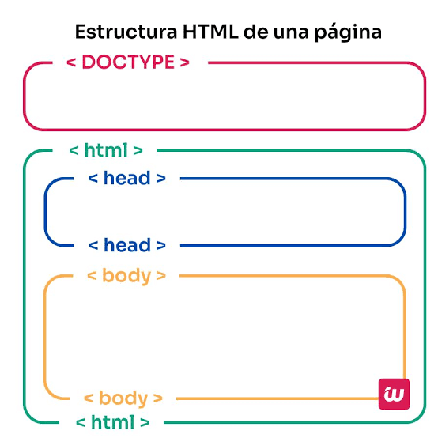
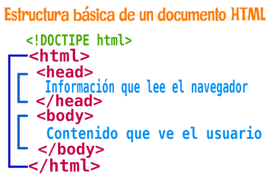
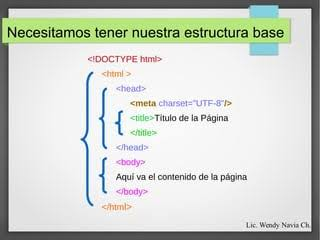
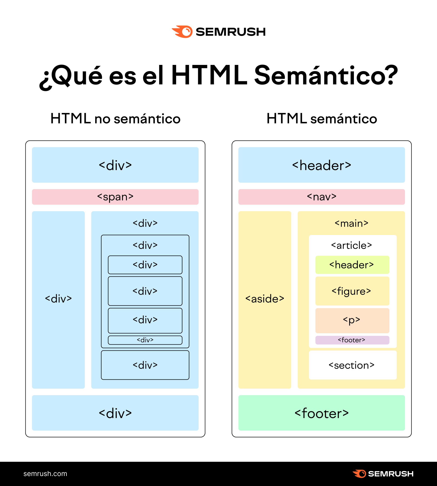

INTRODUCCION A HTML
Regresar
HTML (HyperText Markup Language) nació en **1989** gracias a Tim Berners-Lee, un físico en el CERN que buscaba una forma sencilla de compartir documentos académicos entre investigadores de distintas universidades. Inspirándose en el hipertexto, Berners-Lee creó la primera versión oficial publicada en **1991**, la cual contaba con solo 18 etiquetas básicas orientadas a dar formato elemental a los textos y enlazar páginas. Durante la década de 1990, el uso de la Web se expandió rápidamente hacia el público general, lo que desencadenó las "guerras de navegadores" entre Netscape y Microsoft. Ambas compañías comenzaron a crear etiquetas propias no estandarizadas para competir por el mercado, lo que provocó graves problemas de compatibilidad y la necesidad urgente de crear un organismo regulador. Para solucionar el caos de la falta de estándares, se fundó en 1994 el **World Wide Web Consortium (W3C)**, liderado por el propio Berners-Lee. El W3C se encargó de unificar las reglas de la web y publicó versiones clave como **HTML 2.0 (1995)** y **HTML 4.01 (1999)**, fijando una estructura sólida para el desarrollo web de la época. A principios de los años 2000, el W3C intentó pausar el desarrollo de HTML para migrar hacia **XHTML**, una versión mucho más rígida basada en XML. Sin embargo, esta apuesta fue rechazada por los desarrolladores y los creadores de navegadores (Opera, Mozilla y Apple), ya que las reglas estrictas de XHTML rompían muchas páginas web existentes y complicaban el trabajo diario. Ante el descontento, los desarrolladores formaron el grupo **WHATWG** en 2004 para trabajar de forma independiente en una versión más moderna e interactiva. Finalmente, el W3C reconoció el fracaso de XHTML y se alió nuevamente con el WHATWG para formalizar **HTML5**, presentado oficialmente en **2014** con soporte nativo para video, audio, gráficos y aplicaciones complejas sin depender de complementos externos. En la actualidad, HTML ha dejado de utilizar números de versión rígidos para convertirse en un **estándar vivo (Living Standard)** mantenido activamente por el WHATWG. Esto significa que el lenguaje evoluciona e incorpora nuevas funciones constantemente para adaptarse a las demandas de los navegadores y dispositivos modernos.
ESTRUCTURA DE UN ETIQUETA DE HTML



ESTRUCTURA BASICA DE UNA PAGINA WEB HTML


ESTRUCTURA SEMANTICA DE UNA PAGINA WEB HTML
